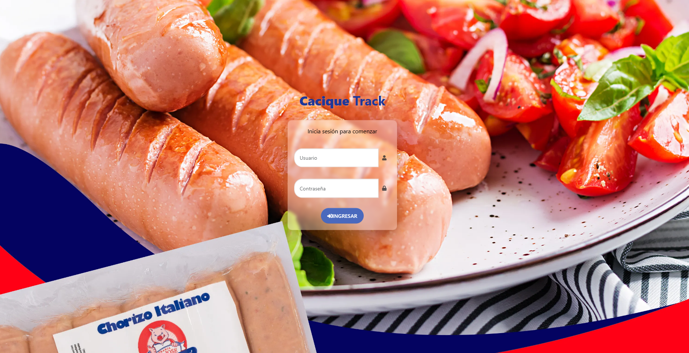
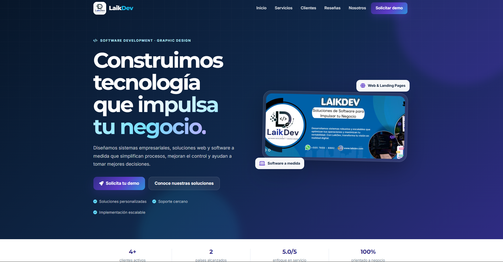
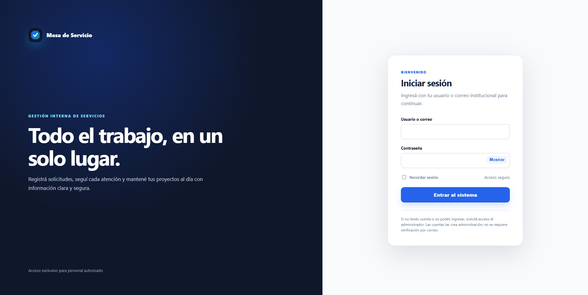
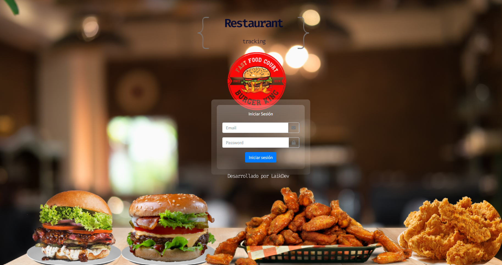
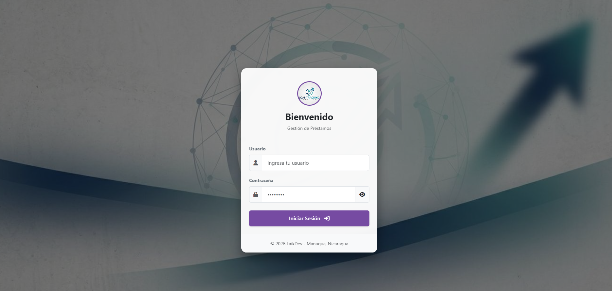
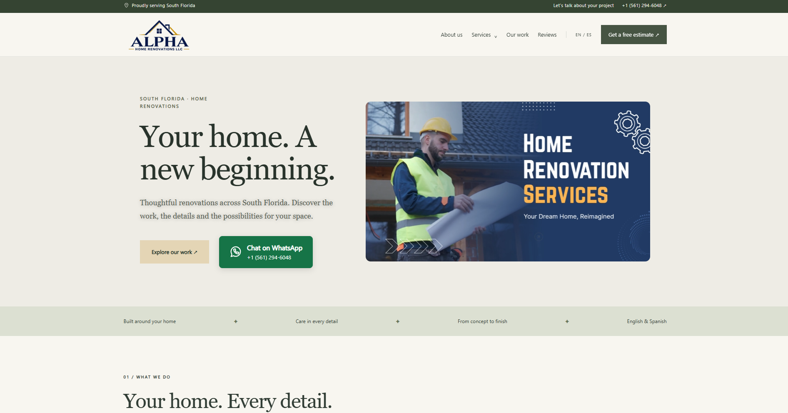

Entender primero
Mapeo necesidades, reglas y puntos de fricción antes de proponer una solución.
DESARROLLADOR DE SOFTWARE · NICARAGUA
Soy Jeremy Silva. Construyo soluciones para operaciones reales: aplicaciones web, de escritorio y Android, además de integraciones que conectan sistemas empresariales y ERP.
Me interesa entender cómo funciona un negocio antes de escribir una línea de código. Así puedo construir herramientas que conectan personas, información y operaciones sin perder de vista el uso diario.
Mi recorrido combina desarrollo de software, análisis de procesos e integración de sistemas. He trabajado en soluciones para producción, inventario, finanzas, comercio y atención de servicios.
Conocé mi recorrido en LinkedInMapeo necesidades, reglas y puntos de fricción antes de proponer una solución.
Integro aplicaciones y datos para que los equipos operen con información consistente.
Cuido la trazabilidad, la seguridad y la calidad en cada flujo de trabajo.
Sistemas para industrias y equipos con necesidades distintas: control de producción, integración de ERP, comercio, servicios y crecimiento digital.
Sistema especializado para tabacaleras: seguimiento de producción desde preindustria hasta producto final, trazabilidad de pilones, reportes de nómina e integración operativa con Softland.
Consultar sobre el proyecto
02Sistema para Matadero Cacique: liquidación de rutas, punto de venta, control de entregas cárnicas, reportes y facturación conectada con Softland ERP.
Consultar este proyecto
03Marca y plataforma para ofrecer desarrollo de software y soluciones digitales, con sitio comercial y panel para administrar clientes, reseñas y solicitudes.
Visitar sitio
04Gestión de tickets y proyectos con roles, SLA, evidencias, sprints, calificaciones y reportes para áreas de negocio.
Consultar sobre el proyectoPortal para proveedores y equipos internos con gestión de facturas y pagos, flujo de solicitudes ABC, expediente documental, notificaciones y auditoría.
Consultar sobre el proyecto
06Sistema de gestión para restaurantes: inventario, compras, recetas, costos, facturación, sucursales y reportes operativos.
Consultar sobre el proyecto
07Plataforma de microfinanzas para clientes, créditos, desembolsos, pagos, cobranza, capital, contabilidad y auditoría.
Consultar sobre el proyecto
08Sitio bilingüe para remodelación de hogares con páginas de servicios, galerías de proyectos, contenido administrable y formularios de consulta.
Ver sitioPlataforma de punto de venta e inventario para administrar productos, atributos, movimientos y flujos comerciales.
Consultar sobre el proyectoEn los proyectos privados, el enlace lleva a una consulta. Los enlaces públicos se pueden abrir directamente.
Elijo la tecnología según el problema, el entorno y las personas que usarán la solución.
¿Tenés un reto? HablemosPlataformas empresariales, APIs, portales y paneles.
Herramientas instalables y aplicaciones móviles conectadas al negocio.
Intercambio confiable de datos entre aplicaciones, bases de datos y Softland.
Inventario, producción, finanzas, ventas y trazabilidad.
Mi experiencia profesional y sus fechas se mantienen actualizadas en LinkedIn. Aquí comparto el hilo que conecta ese recorrido.
Ver experiencia en LinkedInUniversidad Nacional de Ingeniería · formación en sistemas y tecnología.
Aplicaciones, sistemas de escritorio y Android, más integraciones para conectar el flujo completo del negocio.
Herramientas confiables, mantenibles y diseñadas alrededor de cómo trabaja cada equipo.
¿TENÉS UN PROYECTO, UNA IDEA O UN RETO?